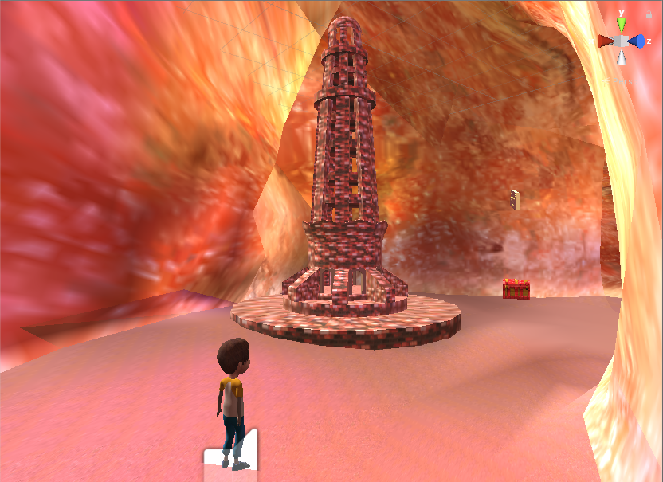
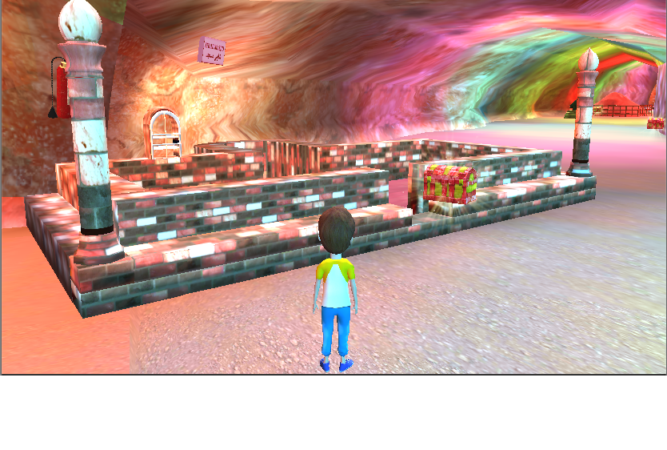
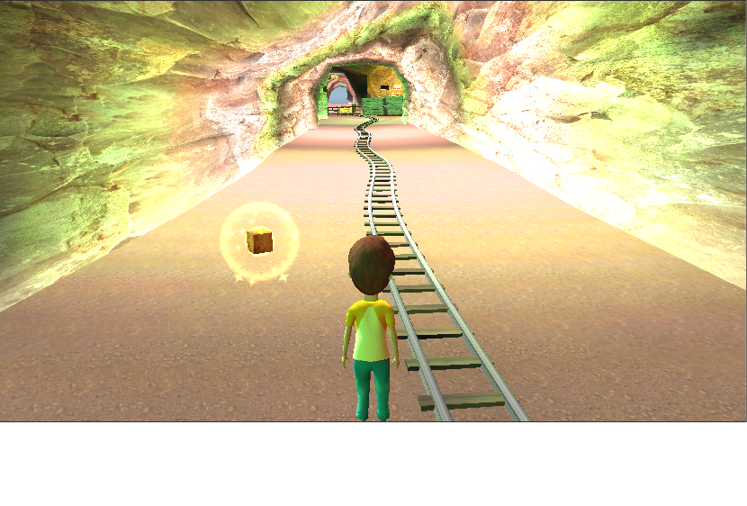
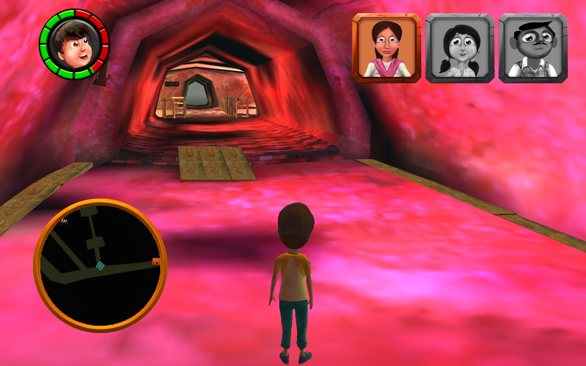
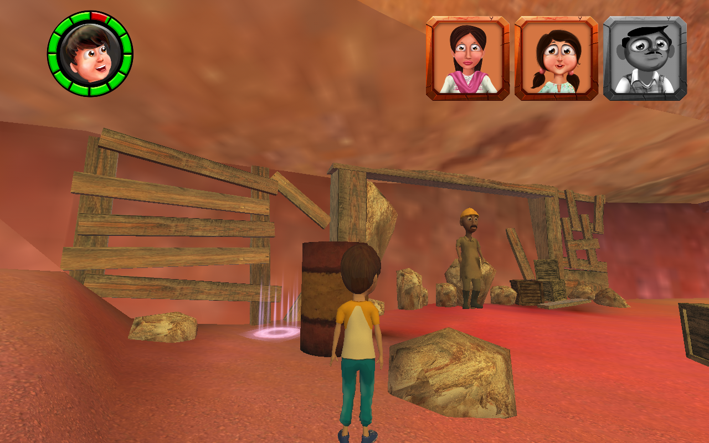
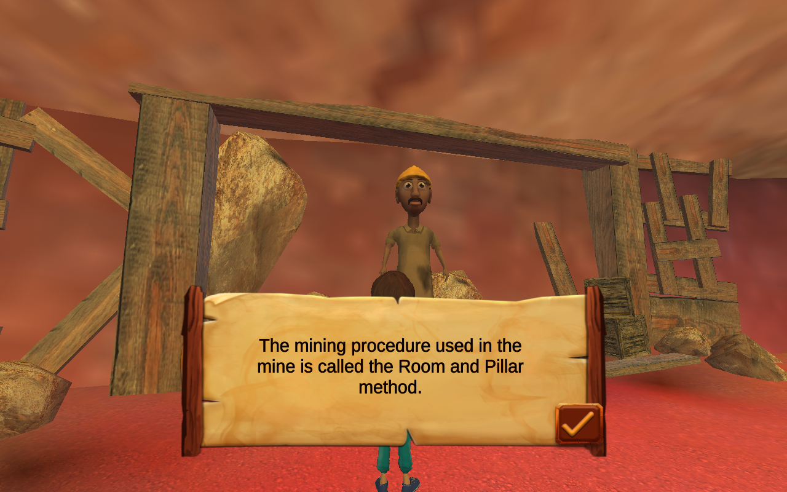
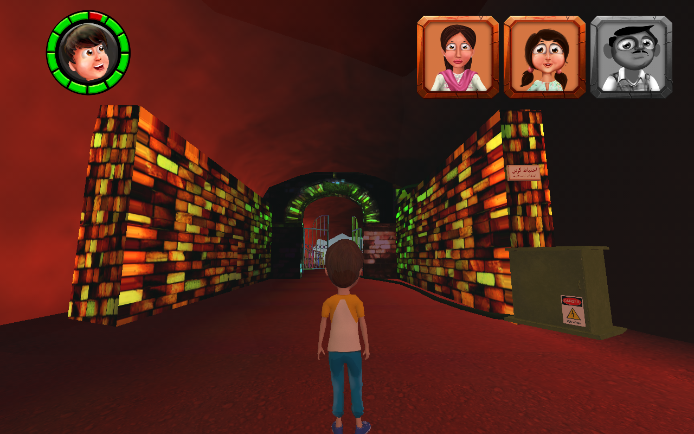
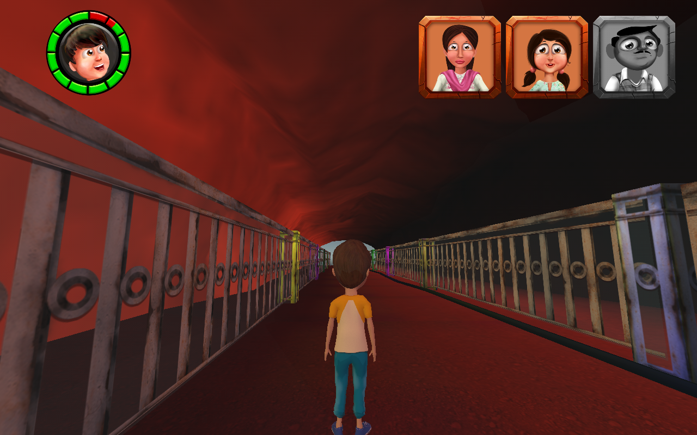

Project KHOJ
3D Serious Game for Environmental Preservation
Evaluating the effectiveness of a 3D serious game to educate and teach children about environmental preservation, climate change, civic values and empathy. The game was built in Unity3D, based on exhaustive primary and secondary research, participatory design, story-boarding, wire-framing, tested through an iterative user testing process in order to log behavioral changes.
Background
I worked on this project with a not-for-profit organization called United We REACH. I was the co-manager of the team behind this project where I also worked extensively on the research, design, development as well as usability testing of this project.
Challenge
The current education system in Pakistan is falling short of imparting the education that the children need. The problems are wide-ranging and multifold. Two of the numerous issues including:
- The one-sided way in which knowledge is imparted
- Lack of knowledge regarding the country's rich historical and cultural heritage
There is a lack of provision of quality education through the integration of technology to students from low socioeconomic demographics. Currently, these children have little to no knowledge of the culturally significant sites in Pakistan.
Discussion & Solution
Project KHOJ is a 3D game built using Unity3D that aims to inculcate a sense of pride and appreciation for these places. In order to do that in an engaging and informative manner, the organization intended to release a series of games based around these sites, starting with a game based on the Khewra Salt Mines. These games would disseminate knowledge to the students in a manner that practices UWR's teaching philosophy of focusing on critical thinking and activity-based learning.
The primary learning objective of the game series is to inculcate in students a recognition of the need to preserve culturally significant sites in Pakistan.
The target audience were children aged 7-9 years old with average proficiency in the English language. The interactive game allows the user to move the player around various levels and complete different tasks while learning about the site through animated videos. The assessments are intertwined with the game narrative so as to not be a burden to the students. The students would be assessed to check their progress on the learning objectives directly and indirectly. The following types of assessments were included within the game:
- Multiple-choice questions
- Fill in the blanks
- Clean the wall activities
- In-game pick and drop exercises
- In-game obstacle avoidance activities
Screens











